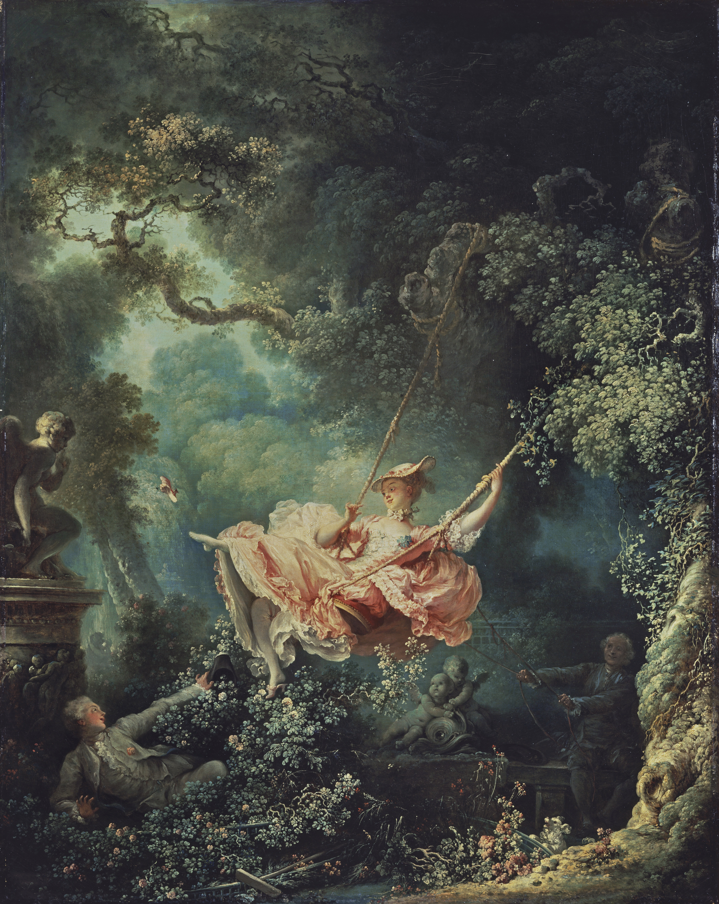
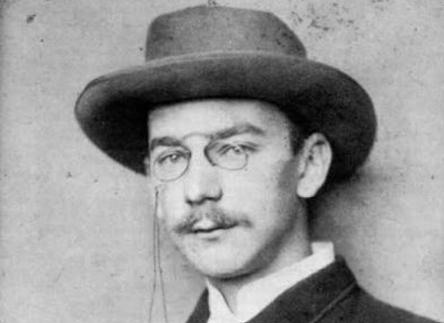
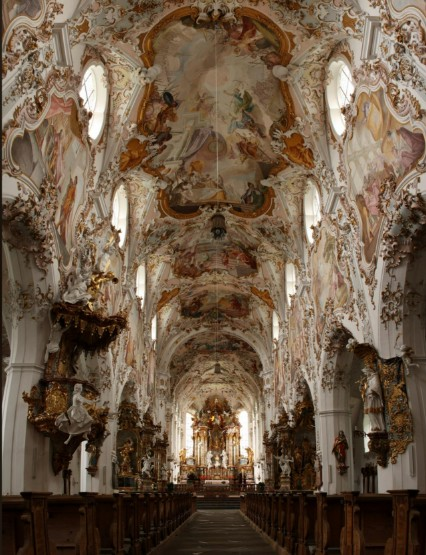

Időrendi elhelyezése és fontossága:
A barokk a reneszánsz után következő stílustörténeti korszak, az építészet, a zene, festészet, szobrászat, tánc és más művészetek korstílusa. Kb. 1575-től kb. 1770-ig tartott, de a spanyol és a portugál birodalom területén, beleértve az Ibériai-félszigetet, az új stílusokkal együtt folytatódott a 19. század első évtizedéig. Közvetlenül a manierizmusból fejlődött ki. A barokk késői ága a copf, illetve a rokokó stílus. A barokkot követő korstílus a klasszicizmus.
A barokk jelentős világnézeti fordulat a reneszánsz után és a filozófiában, irodalomban európai eszmetörténeti korszakként is felfogható.A barokk a teremtés tökéletességének vallásos emberi megfelelője. Innen ered a minden részlet kidolgozására kiterjedő emberi erőfeszítés, amelynek eredménye a barokk stílus.
Egyes történészek a barokkot három vagy négy korszakra osztják:
- korai barokk (kb. 1575–1630/1650)
- érett barokk (kb. 1630/1650–1680/1700)
- késő barokk (kb. 1680/1700–1730/1750)
- rokokó (kb. 1730–1760/70)
Időnként a késő barokkot és a rokokót egyenlővé teszik, máskor önálló korszaknak tekintik.

Előzmények:
A barokk kor a humanizmus és a felvilágosodás közötti kor, az ellenreformáció és az abszolutisztikus királyságok kialakításának ideje. A keresztény ébredés tulajdonképpen annak vélekedésnek széles körű terjedése, hogy a világ hétköznapi bajai szükségszerű kapcsolatban állnak az alapvető bűnnel, a Teremtőtől való elfordultsággal. A reformáció hatására mind a protestáns, mind a katolikus körökben előtérbe került az a nézet, mely szerint a hétköznapok bajait is okozó bűntől és következményeitől nem lehet tökéletesen megszabadulni az e világi életben, és így az emberi erőfeszítés ellenére számukra a Teremtő kegyelmessége jelenti a fő reményt. Egészen a 19. századig nem ismerték el külön irányzatnak. A „rehabilitációt” Heinrich Wölfflin vitte végbe, amikor is barokk műveket (elsősorban képzőművészeti alkotásokat) tanulmányozott. Ő a következő következtetéseket vonta le:
- Míg a reneszánsz alkotások „zártak”, addig a barokk kor alkotásai „nyitottak”
- Az alakzatok egymáshoz képesti elrendezése is más: amíg a reneszánsznál egymás mellé rendelés és szimmetria, addig a barokknál alá-fölé rendelés figyelhető meg
- A reneszánsz egy nézőpontot alkalmazott, a barokk többet (nézőpontváltás)
- A reneszánsz alkotások felületi alkotások, a barokkban a mélység-magasság figyelhető meg
- A reneszánsz művek statikusak, ellentétben a barokk mozgalmasságával.
Ezen eltérésekre hivatkozva mondta ki Wölfflin, hogy a barokk igenis autonóm korstílus.

Stílusjegyei:
Bár szintúgy Itáliából indult, a barokk a reneszánsznak szinte pont az ellenkezője volt, hiszen míg a reneszánszra a kiegyensúlyozott, emberléptékű harmónia volt a jellemző, addig a barokk igyekezett ettől eltávolodni. Stílusjegyei azonban a reneszánszból származnak, azok továbbfejlesztései. Másfelől erős túlzás lenne azt mondani, hogy a barokk eltávolodott a kiegyensúlyozott, emberléptékű harmóniától. A reneszánsztól is inkább a részletek kidolgozottságában lépett tovább. Innen származik az, hogy a tökéletesre, a nagyon kidolgozottra angolul is és magyarul is azt mondjuk, hogy barokk.
Főbb stílusjegyei:
- mozgalmasság, dinamizmus
- monumentalizmus
- heroizmus
- patetizmus
- conceto (meglepetés), az illúzió valóságként való beállítása
- dekorativitás
- titokzatosság
- misztika
- komplexitás, bonyolultság
- erős kontrasztok
- látványosság
- bonyolult, túldíszített formák
